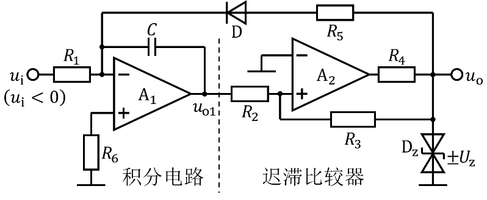

压控振荡器
暂停演示
根据输入电压的变化来调整输出频率的电子振荡器。图示电路为电荷平衡式压控振荡器，由积分运算电路和迟滞比较器组成。

输入电压$u_\mathrm{i}$ ($u_\mathrm{i} < 0$)
$u_{\mathrm{o1}}$
$u_{\mathrm{o}}$
$t$
$t$
$U_\mathrm{T}$
$-U_\mathrm{T}$
$U_\mathrm{Z}$
$-U_\mathrm{Z}$
$T_1$
$T_2$
$T_1=\frac{2R_2R_5C}{R_3}$，$T_2=\frac{2R_2R_1C}{R_3}\cdot\frac{U_z}{\left|u_i\right|}$
振荡信号周期：$T=T_1+T_2\approx\frac{2R_2R_1C}{R_3}\cdot\frac{U_z}{\left|u_i\right|}$
输出信号频率：$f=\frac{1}{T}=\frac{R_3}{2R_2R_1C}\cdot\frac{\left|u_i\right|}{U_z}$